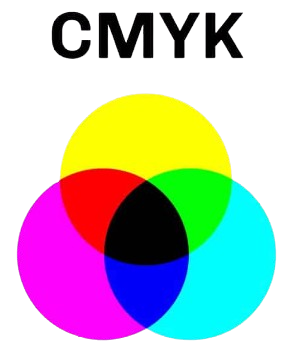

Kleurmodellen
Pixels :
Pixels zijn kleine lichtpuntjes die je op alle schermen ziet, zoals op een laptop, telefoon, tablet of een monitor. Een pixel bestaat uit drie lampjes met kleuren rood, groen en blauw (RGB) en als deze kleuren samen met elkaar worden gemengd dan krijg je andere nieuwe kleuren. Pixels kunnen ook meer of minder licht geven waardoor je verschillende kleuren ziet. Als deze pixels samen naast elkaar komen dan kan er een plaatje worden gevormd met verschillende kleuren.
Resolutie :
Zoals ik had gezegd dat als er pixels samen naast elkaar komen, dan kan er een plaatje worden gevormd met verschillende kleuren. Er zijn heel veel verschillende resoluties die gebruikt worden door mensen. Resoluties van een scherm geven aan hoeveel pixels er in totaal bij elkaar zijn gekomen om een plaatje te vormen. De resolutie 3840 x 2160 (4k) is veel meer scherper dan bijvoorbeeld 2048 x 1080 (2k), want bij de 4k resolutie zijn er veel meer pixels bij elkaar gekomen/gebruikt dan bij de 2k resolutie. Dus hoe hoger de resolutie hoe scherper het beeld/plaatje.
RGB model :
RGB staat voor rood, groen en blauw, deze kleuren zijn ook de kleuren in een pixel. Het RGB model werkt op een zwarte achtergrond, dus als de lampjes van je pixels niet branden. Door dat je de kleuren rood, groen en blauw met elkaar combineert ontstaan er andere kleuren. Het werkt net zoals bij het maken van verf. Onze computers gebruiken het getal 0-255 om aan te geven hoeveel er van elke kleur is gebruikt. Als je bijvoorbeeld de kleur roze in het RGB model wilt schrijven, dan begin je met hoeveel rood gebruikt is en daarna hoeveel groen en als laatste hoeveel blauw : (255, 51, 255).

CMYK model :
Als je iets gaat printen dan gebruik je een wit papiertje, maar op een wit papiertje kan het RGB model niet gebruikt worden. Daarom gebruiken we het CMYK model. CMYK staat voor Cyan, Magneta, Yellow en Key Color. De kleuren die deze model gebruikt om een plaatje te maken zijn cyaan, magenta en geel. Als deze drie kleuren samen met elkaar gemengd worden ontstaat er een donkergrijze kleur. Voor echte zwart wordt er een aparte zwarte kleur toegevoegd aan dit kleurenmodel.
